FT2232 SPI¶
flashrom supports the -p ft2232_spi (or -p ft2232spi in very old flashrom revisions) option
which allows you to use an FTDI FT2232/FT4232H/FT232H based device as external SPI programmer.
This is made possible by using libftdi. flashrom autodetects the presence of libftdi headers and enables FT2232/FT4232H/FT232H support if they are available.
Currently known FT2232/FT4232H/FT232H based devices which can be used as SPI programmer together with flashrom are described below.
DLP Design DLP-USB1232H¶
The DLP Design DLP-USB1232H (datasheet DLP-USB1232H) can be used with flashrom for programming SPI chips.
Where to buy: Digikey, Mouser, Saelig
Setup¶
DLP-USB1232H based SPI programmer schematics
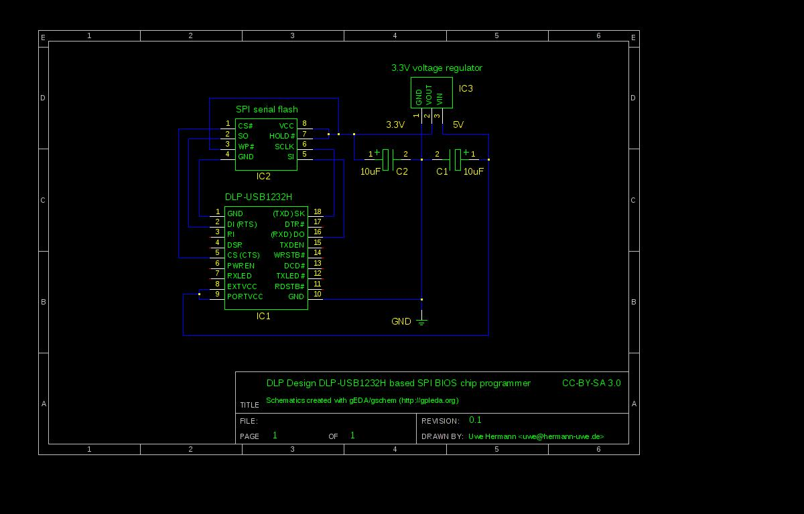
In order to use the DLP-USB1232H device as SPI programmer you have to setup a small circuit (e.g. on a breadboard). See the schematics for details (you can also download the schematics as PDF for easier printing).
What you will need¶
Quantity |
Device |
Footprint |
Value |
Comments |
|---|---|---|---|---|
1 |
DLP Design DLP-USB1232H |
— |
— |
... |
1 |
Breadboard |
— |
— |
... |
many |
Jumper wires |
— |
— |
... |
1 |
DIP-8 SPI chip |
— |
— |
This is the chip you want to program/read/erase |
1 |
3.3V voltage regulator |
TO-220 |
3.3V |
E.g. LD33V or LD1117xx |
1 |
Electrolytic capacitor |
single ended |
100nF |
... |
1 |
Electrolytic capacitor |
single ended |
10uF |
... |
Instructions and hints¶
You must connect/shorten pins 8 and 9, which configures the device to be powered by USB. Without this connection it will not be powered, and thus not be detected by your OS (e.g. it will not appear in the
lsusboutput).You need a 3.3V voltage regulator to convert the 5V from USB to 3.3V, so you can power the 3.3V SPI BIOS chip.
You can probably use pretty much any 3.3V voltage regulator, e.g. LD33V or LD1117xx. For usage on a breadboard the TO-220 packaging is probably most useful.
You have to connect two capacitors (e.g. 100nF and 10uF as per datasheets, but using two 10uF capacitors, or even two 47uF capacitors also works in practice) as shown in the schematics, otherwise the voltage regulator will not work correctly and reliably.
Connect the following pins from the DLP-USB1232H to the SPI BIOS chip:
18 (SK) to SCLK
16 (DO) to SI
2 (DI) to SO
5 (CS) to CS#
The WP# and HOLD# pins should be tied to VCC! If you leave them unconnected you'll likely experience strange issues.
All GND pins should be connected together (pins 1i and 10 on the DLP-USB1232H, pin 8 on the SPI chip, pin 1 on the voltage regulator).
You have to invoke flashrom with the following parameters:
$ flashrom -p ft2232_spi:type=2232H,port=A
Photos¶
Module, top
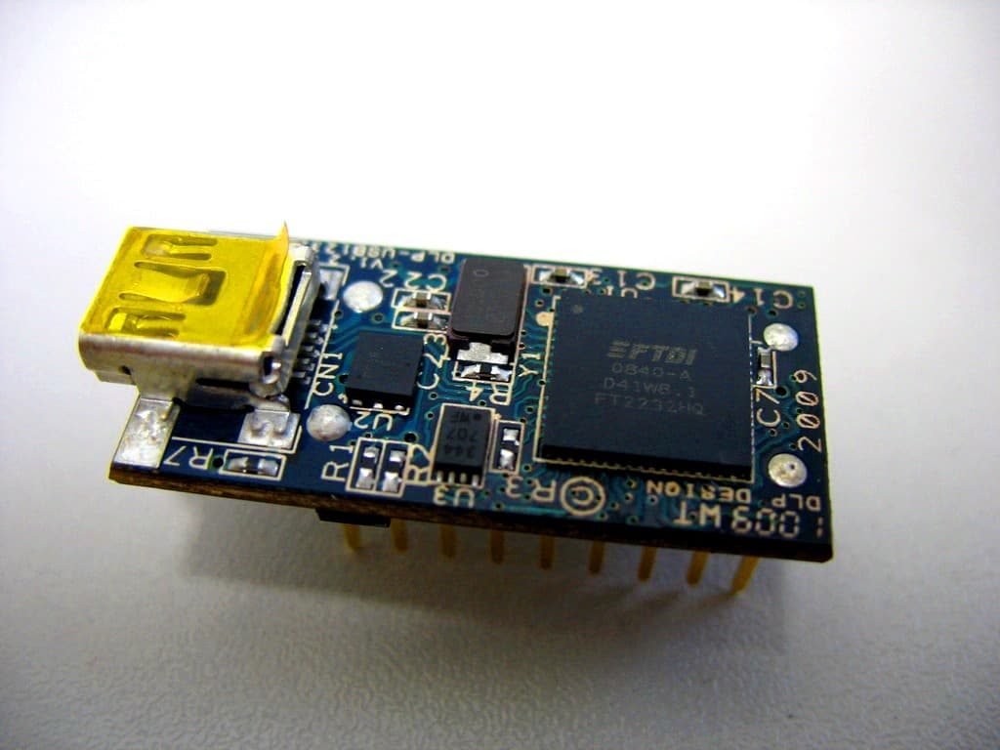
Module, bottom
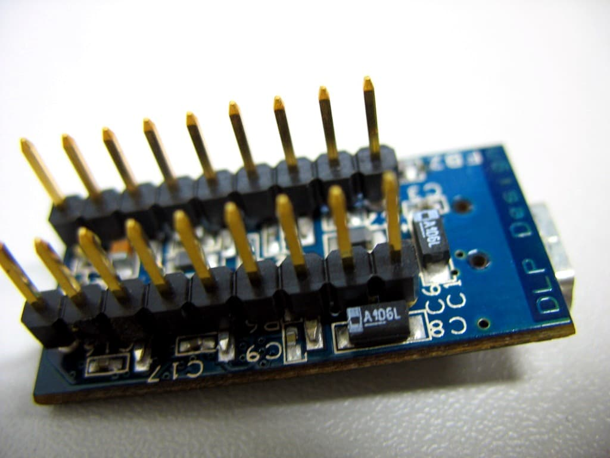
SPI header on a mainboard
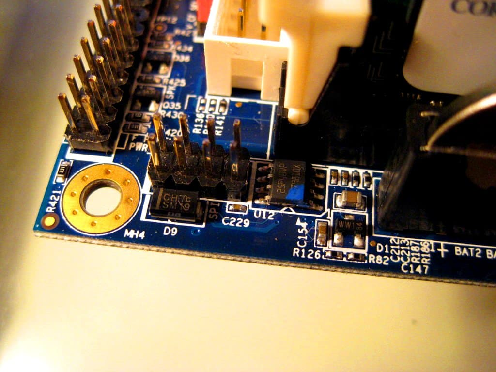
Module on a breadboard, connected to the mainboard's SPI header
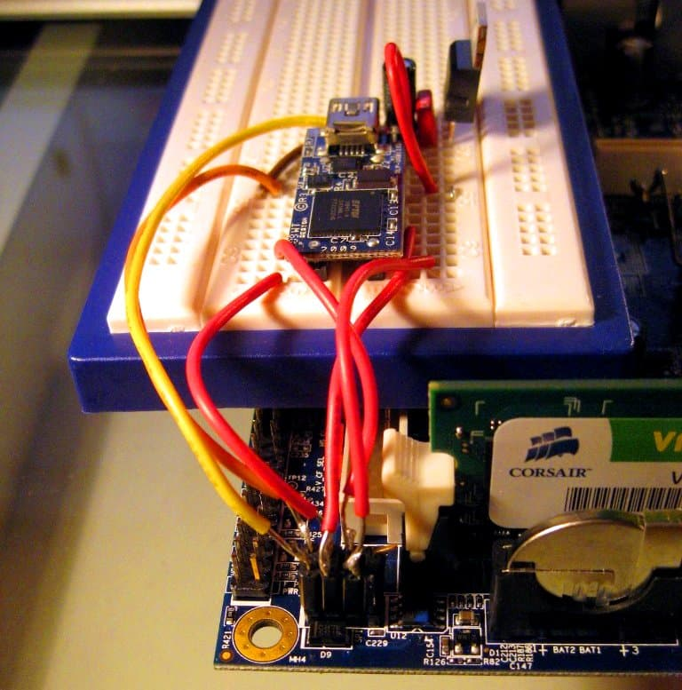
Breadboard setup
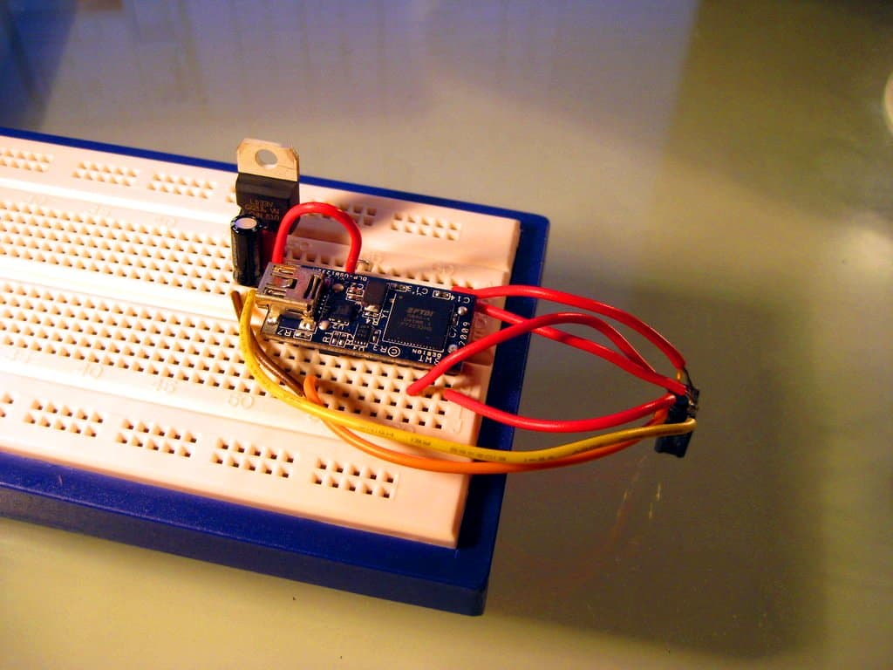
Another breadboard setup
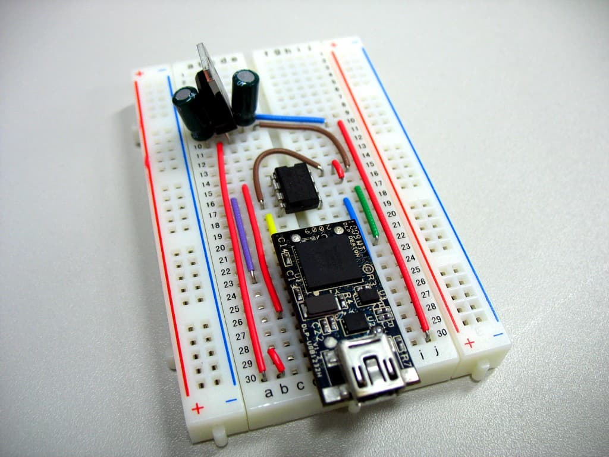
Module and parts
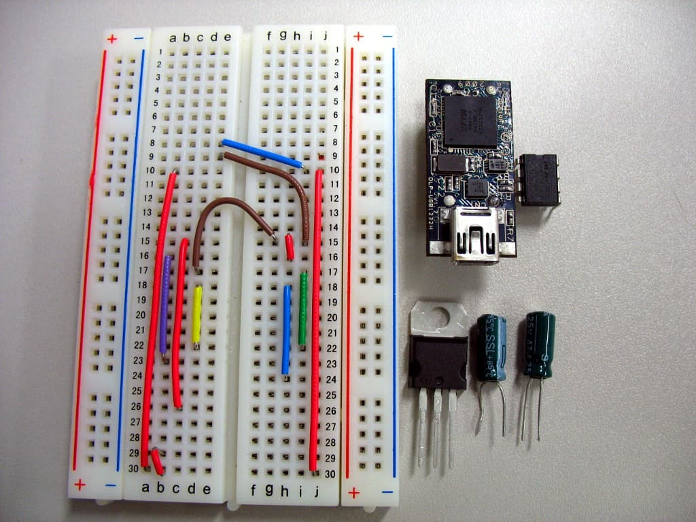
FTDI FT2232H Mini-Module¶
The FTDI FT2232H Mini-Module Evaluation Kit (the datasheet) can be used with flashrom for programming SPI chips.
Pinout¶
Module Pin |
FTDI |
MPSSE |
SPI |
SPI Flash (vendor specific) |
|---|---|---|---|---|
CN2-7 |
AD0 |
TCK/SK |
(S)CLK |
(S)CLK |
CN2-10 |
AD1 |
TDI/DO |
MOSI |
SI / DI |
CN2-9 |
AD2 |
TDO/DI |
MISO |
SO / DO |
CN2-12 |
AD3 |
TMS/CS |
/CS / /SS |
/CS |
CN3-26 |
BD0 |
TCK/SK |
(S)CLK |
(S)CLK |
CN3-25 |
BD1 |
TDI/DO |
MOSI |
SI / DI |
CN3-24 |
BD2 |
TDO/DI |
MISO |
SO / DO |
CN3-23 |
BD3 |
TMS/CS |
/CS / /SS |
/CS |
FTDI FT4232H Mini-Module¶
The FTDI FT4232H Mini-Module Evaluation Kit (datasheet) can be used with flashrom for programming SPI chips.
Olimex ARM-USB-TINY/-H and ARM-USB-OCD/-H¶
The Olimex ARM-USB-TINY (VID:PID 15BA:0004) and ARM-USB-OCD (15BA:0003) can be used with flashrom for programming SPI chips. The ARM-USB-TINY-H (15BA:002A) and ARM-USB-OCD-H (15BA:002B) should also work, though the tested status is unconfirmed.
The following setup can then be used to flash a BIOS chip through SPI.
Pinout:
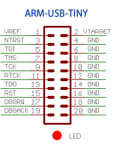
Pin (JTAG Name) |
SPI/Voltage Source |
|---|---|
1 (VREF) |
VCC (from Voltage Source) |
2 (VTARGET) |
VCC (to SPI target) |
4 (GND) |
GND (from Voltage Source) |
5 (TDI) |
SI |
6 (GND) |
GND (to SPI target) |
7 (TMS) |
CE# |
9 (TCK) |
SCK |
13 (TDO) |
SO |
On the ARM-USB-TINY, VREF, and VTARGET are internally connected, and all the GND lines (even numbered pins, from 4 to 20) share the same line as well, so they can be used to split VCC/GND between the voltage source and the target.
The voltage source should provide 3.0V to 3.3V DC but doesn't have to come from USB: it can be as simple as two AA or AAA batteries placed in serial (2 x 1.5V).
Invoking flashrom¶
You first need to add the -p ft2232_spi option, and then specify one of arm-usb-tiny,
arm-usb-tiny-h, arm-usb-ocd or arm-usb-ocd-f for the type.
For instance, to use an ARM-USB-TINY, you would use:
$ flashrom -p ft2232_spi:type=arm-usb-tiny
Openmoko¶
The openmoko debug board (which can also do serial+jtag for the openmoko phones, or for other phones) has its shematics available here.
Informations¶
The openmoko debug board can act as an SPI programmer bitbanging the FTDI (no need of an openmoko phone), you just need:
a breadboard
some wires
The openmoko debug board(v2 and after,but only tested with v3)
The voltage is provided by the board itself. The connector to use is the JTAG one (very similar to what's documented in the previous section(Olimex ARM-USB-TINY/-H and ARM-USB-OCD/-H )
Building¶
WARNING: This was tested with 3.3v chips only.
Here's the pinout of the JTAG connector of the openmoko debug board (copied from ARM-USB-tiny because it's the same pinout):
Pin (JTAG Name) |
SPI/Voltage Source |
BIOS Chip connector name |
|---|---|---|
1 (VREF) |
VCC (from Voltage Source) |
VCC (3.3v only) |
2 (VTARGET) |
VCC (to SPI target) |
Not connected |
4 (GND) |
GND (from Voltage Source) |
Ground |
5 (TDI) |
SI |
DIO (Data Input) |
6 (GND) |
GND (to SPI target) |
Not connected |
7 (TMS) |
CE# |
CS (Chip select) |
9 (TCK) |
SCK |
CLK (Clock) |
13 (TDO) |
SO |
DO (Data output) |
Also connect the BIOS chip's write protect(WP) to VCC
Also connect the BIOS chips's HOLD to VCC
Pictures¶
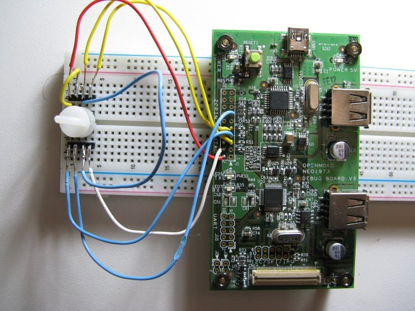
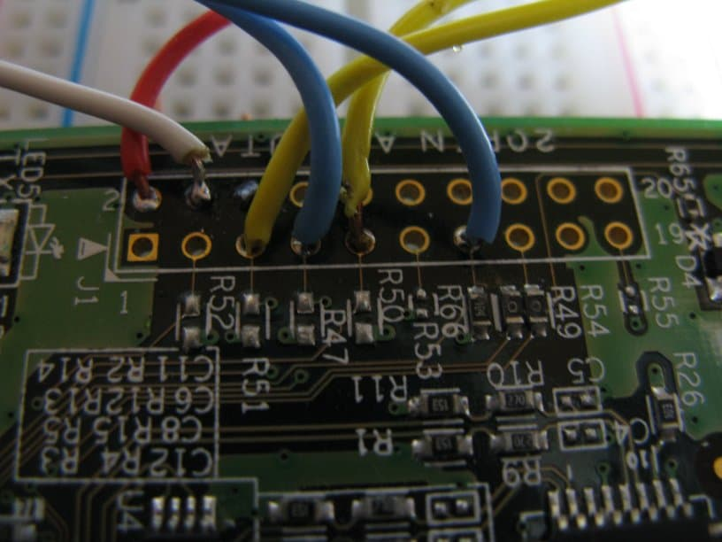
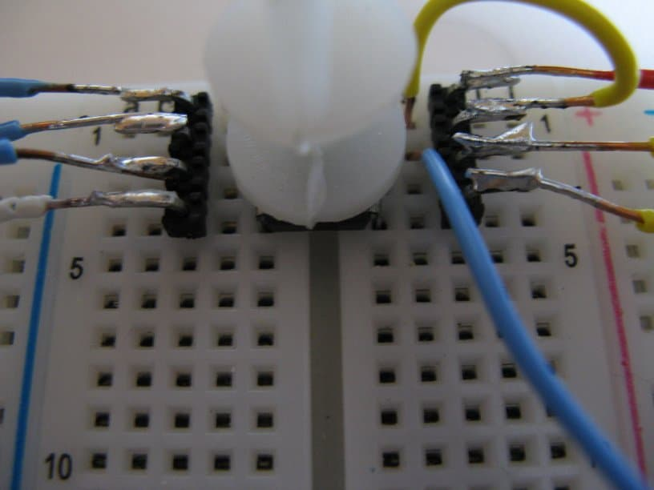
Performances¶
$ time ./flashrom/flashrom -p ft2232_spi:type=openmoko -r coreboot.rom
flashrom v0.9.5.2-r1545 on Linux 3.0.0-20-generic (x86_64)
flashrom is free software, get the source code at http://www.flashrom.org
Calibrating delay loop... OK.
Found Winbond flash chip "W25X80" (1024 kB, SPI) on ft2232_spi.
Reading flash... done.
real 0m19.459s
user 0m1.244s
sys 0m0.000s
$ time ./flashrom/flashrom -p ft2232_spi:type=openmoko -w coreboot.rom
flashrom v0.9.5.2-r1545 on Linux 3.0.0-20-generic (x86_64)
flashrom is free software, get the source code at http://www.flashrom.org
Calibrating delay loop... OK.
Found Winbond flash chip "W25X80" (1024 kB, SPI) on ft2232_spi.
Reading old flash chip contents... done.
Erasing and writing flash chip... Erase/write done.
Verifying flash... VERIFIED.
real 1m1.366s
user 0m7.692s
sys 0m0.044s
Advantages/disadvantages¶
fast(see above)
easily available (many people in the free software world have openmoko debug board and they don't know what to do with them), can still be bought
stable
SPI only
Generic Pinout¶
There are many more simple modules that feature the FT*232H. Actual pinouts depend on each module, the FTDI names map to SPI as follows:
Pin Name |
MPSSE |
SPI |
SPI Flash (vendor specific) |
|---|---|---|---|
DBUS0 |
TCK/SK |
(S)CLK |
(S)CLK |
DBUS1 |
TDI/DO |
MOSI |
SI / DI |
DBUS2 |
TDO/DI |
MISO |
SO / DO |
DBUS3 |
TMS/CS |
/CS / /SS |
/CS |